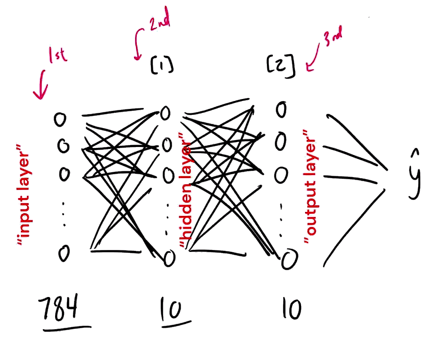
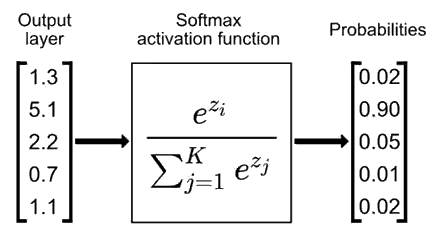
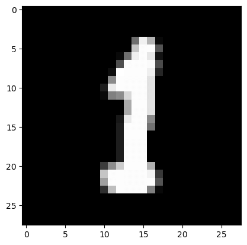
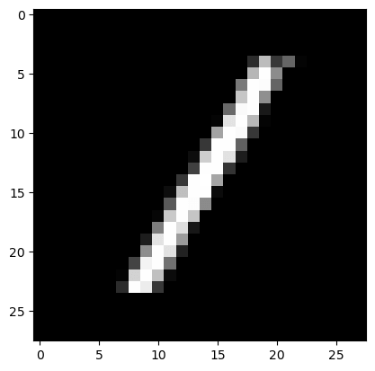
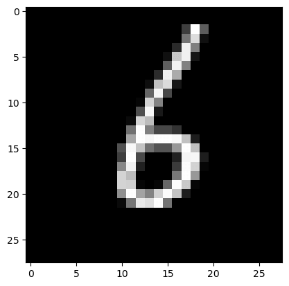
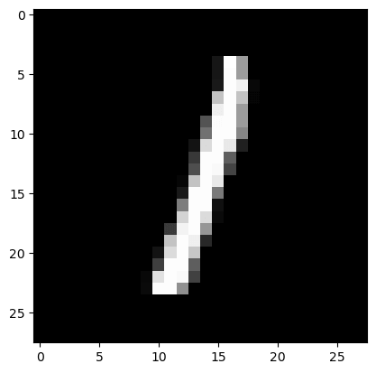

Python-Building a neural network FROM SCRATCH (no Tensorflow or Pytorch, just numpy & math)
教你怎么只用 numpy 和数学方法构建一个神经网络，而不是使用 Tensorflow 或 Pytorch。
目录
相关资源
Building a neural network FROM SCRATCH (no Tensorflow/Pytorch, just numpy & math) - YouTube
- 这个视频有点坑，照着视频写代码会有很多错误😅
Simple MNIST NN from scratch (numpy, no TF/Keras) | Kaggle
- 原作者的笔记，还比较靠谱
内容
导入相关库
|
读取数据集
|
|
(42000, 785)
数组形状:$(42000, 785)$, 说明:
$42000$ 行, 表示这个数据集有 $42000$ 张图片
$785$ 列, 表示数据集中每张图片大小为 $28 \times 28$, 外带 $1$ 个标签, $28 \times 28 + 1 = 785$
将数据集分为训练集和测试集
|
定义相关函数
Our NN will have a simple two-layer architecture. Input layer $a^{[0]}$ will have $784$ units corresponding to the $784$ pixels in each $28\times 28$ input image. A hidden layer $a^{[1]}$ will have $10$ units with ReLU activation, and finally our output layer $a^{[2]}$ will have $10$ units corresponding to the ten digit classes with softmax activation.
我们的神经网络将有一个简单的两层结构。输入层 $a^{[0]}$ 将有 $784$ 个单元，对应于每个 $28\times 28$ 输入图像中的 $784$ 个像素。隐藏层 $a^{[1]}$ 将有 $10$ 个单元，用 ReLU 激活，最后我们的输出层 $a^{[2]}$ 将有 $10$ 个单元，对应于用 softmax 激活的 $10$ 个数字类别。
Vars and shapes

Forward prop
- $A^{[0]} = X$: 784 x m
- $Z^{[1]} \sim A^{[1]}$: 10 x m
- $W^{[1]}$: 10 x 784 (as $W^{[1]} A^{[0]} \sim Z^{[1]}$)
- $B^{[1]}$: 10 x 1
- $Z^{[2]} \sim A^{[2]}$: 10 x m
- $W^{[1]}$: 10 x 10 (as $W^{[2]} A^{[1]} \sim Z^{[2]}$)
- $B^{[2]}$: 10 x 1
Backprop
- $dZ^{[2]}$: 10 x m ($~A^{[2]}$)
- $dW^{[2]}$: 10 x 10
- $dB^{[2]}$: 10 x 1
- $dZ^{[1]}$: 10 x m ($~A^{[1]}$)
- $dW^{[1]}$: 10 x 10
- $dB^{[1]}$: 10 x 1
初始化参数
使初始参数随机在 [-0.5, 0.5) 之间
通过 np.random.rand() 可以返回一个或一组服从“0 ~ 1”均匀分布的随机样本值。随机样本取值范围是 [0, 1)，不包括 1。
|
激活函数: ReLU
|
Softmax
Softmax 函数将各个输出节点的输出值范围映射到 [0, 1]，并且约束各个输出节点的输出值的和为 1。
$Softmax(z_i)=\frac{e^z_i}{\sum^C_{C=1}e^{z_C}}$，其中 $z_i$ 为第 $i$ 个节点的输出值，$C$ 为输出结点的个数，即分类的类别个数。通过 Softmax 函数就可以将多分类的输出值转换为范围在 [0, 1] 和为 1 的概率分布。

|
前向传播
|
ReLU 函数的导数，用于梯度下降
|
独热编码
将标签 Y 转为独热编码：
|
反向传播
|
调整参数
根据学习率 alpha 调整参数：
|
预测结果
numpy.argmax() 函数返回特定轴上数组的最大元素的索引，选取可能性最大的分类结果作为最终的分类结果。
|
计算准确率
|
梯度下降
|
训练神经网络
最后得到的准确率以及神经网络的各个参数:
|
Iteration: 0
[2 2 9 ... 9 2 2] [6 1 2 ... 5 3 1]
Accuray: 0.13534146341463416
Iteration: 10
[2 6 9 ... 3 6 2] [6 1 2 ... 5 3 1]
Accuray: 0.2577560975609756
Iteration: 20
[2 6 9 ... 3 1 2] [6 1 2 ... 5 3 1]
Accuray: 0.3676341463414634
Iteration: 30
[2 6 9 ... 3 1 1] [6 1 2 ... 5 3 1]
Accuray: 0.4432439024390244
Iteration: 40
[2 1 9 ... 3 1 1] [6 1 2 ... 5 3 1]
Accuray: 0.495390243902439
Iteration: 50
[2 1 8 ... 3 9 1] [6 1 2 ... 5 3 1]
Accuray: 0.5352682926829269
Iteration: 60
[2 1 8 ... 9 9 1] [6 1 2 ... 5 3 1]
Accuray: 0.568390243902439
Iteration: 70
[2 1 8 ... 9 9 1] [6 1 2 ... 5 3 1]
Accuray: 0.5975609756097561
Iteration: 80
[2 1 8 ... 9 9 1] [6 1 2 ... 5 3 1]
Accuray: 0.6207317073170732
Iteration: 90
[2 1 8 ... 9 9 1] [6 1 2 ... 5 3 1]
Accuray: 0.6396829268292683
Iteration: 100
[2 1 8 ... 5 9 1] [6 1 2 ... 5 3 1]
Accuray: 0.6570243902439025
Iteration: 110
[2 1 8 ... 5 9 1] [6 1 2 ... 5 3 1]
Accuray: 0.672829268292683
Iteration: 120
[2 1 8 ... 5 9 1] [6 1 2 ... 5 3 1]
Accuray: 0.6867560975609757
Iteration: 130
[2 1 8 ... 5 9 1] [6 1 2 ... 5 3 1]
Accuray: 0.6998048780487804
Iteration: 140
[2 1 8 ... 5 3 1] [6 1 2 ... 5 3 1]
Accuray: 0.710390243902439
Iteration: 150
[2 1 8 ... 5 3 1] [6 1 2 ... 5 3 1]
Accuray: 0.7207560975609756
Iteration: 160
[2 1 8 ... 5 3 1] [6 1 2 ... 5 3 1]
Accuray: 0.7307560975609756
Iteration: 170
[2 1 8 ... 5 3 1] [6 1 2 ... 5 3 1]
Accuray: 0.7396829268292683
Iteration: 180
[2 1 8 ... 5 3 1] [6 1 2 ... 5 3 1]
Accuray: 0.7484634146341463
Iteration: 190
[2 1 8 ... 5 3 1] [6 1 2 ... 5 3 1]
Accuray: 0.7559512195121951
Iteration: 200
[2 1 8 ... 5 3 1] [6 1 2 ... 5 3 1]
Accuray: 0.7630975609756098
Iteration: 210
[2 1 8 ... 5 3 1] [6 1 2 ... 5 3 1]
Accuray: 0.7700731707317073
Iteration: 220
[2 1 8 ... 5 3 1] [6 1 2 ... 5 3 1]
Accuray: 0.7764878048780488
Iteration: 230
[2 1 8 ... 5 3 1] [6 1 2 ... 5 3 1]
Accuray: 0.7819024390243903
Iteration: 240
[4 1 8 ... 5 3 1] [6 1 2 ... 5 3 1]
Accuray: 0.7870731707317074
Iteration: 250
[4 1 8 ... 5 3 1] [6 1 2 ... 5 3 1]
Accuray: 0.7922926829268293
Iteration: 260
[4 1 8 ... 5 3 1] [6 1 2 ... 5 3 1]
Accuray: 0.7969512195121952
Iteration: 270
[4 1 8 ... 5 3 1] [6 1 2 ... 5 3 1]
Accuray: 0.8013414634146342
Iteration: 280
[4 1 8 ... 5 3 1] [6 1 2 ... 5 3 1]
Accuray: 0.805439024390244
Iteration: 290
[4 1 8 ... 5 3 1] [6 1 2 ... 5 3 1]
Accuray: 0.8083414634146342
Iteration: 300
[4 1 8 ... 5 3 1] [6 1 2 ... 5 3 1]
Accuray: 0.8113658536585366
Iteration: 310
[4 1 8 ... 5 3 1] [6 1 2 ... 5 3 1]
Accuray: 0.8147560975609756
Iteration: 320
[4 1 8 ... 5 3 1] [6 1 2 ... 5 3 1]
Accuray: 0.818
Iteration: 330
[4 1 8 ... 5 3 1] [6 1 2 ... 5 3 1]
Accuray: 0.8207073170731707
Iteration: 340
[4 1 8 ... 5 3 1] [6 1 2 ... 5 3 1]
Accuray: 0.8234634146341463
Iteration: 350
[4 1 8 ... 5 3 1] [6 1 2 ... 5 3 1]
Accuray: 0.8260975609756097
Iteration: 360
[4 1 8 ... 5 3 1] [6 1 2 ... 5 3 1]
Accuray: 0.8283170731707317
Iteration: 370
[4 1 8 ... 5 3 1] [6 1 2 ... 5 3 1]
Accuray: 0.8308292682926829
Iteration: 380
[4 1 8 ... 5 3 1] [6 1 2 ... 5 3 1]
Accuray: 0.8332682926829268
Iteration: 390
[4 1 8 ... 5 3 1] [6 1 2 ... 5 3 1]
Accuray: 0.8349512195121951
Iteration: 400
[4 1 8 ... 5 3 1] [6 1 2 ... 5 3 1]
Accuray: 0.8371463414634146
Iteration: 410
[4 1 8 ... 5 3 1] [6 1 2 ... 5 3 1]
Accuray: 0.8391463414634146
Iteration: 420
[4 1 8 ... 5 3 1] [6 1 2 ... 5 3 1]
Accuray: 0.8407073170731707
Iteration: 430
[4 1 8 ... 5 3 1] [6 1 2 ... 5 3 1]
Accuray: 0.8424146341463414
Iteration: 440
[4 1 8 ... 5 3 1] [6 1 2 ... 5 3 1]
Accuray: 0.8438780487804878
Iteration: 450
[4 1 8 ... 5 3 1] [6 1 2 ... 5 3 1]
Accuray: 0.845390243902439
Iteration: 460
[4 1 8 ... 5 3 1] [6 1 2 ... 5 3 1]
Accuray: 0.8467317073170731
Iteration: 470
[4 1 8 ... 5 3 1] [6 1 2 ... 5 3 1]
Accuray: 0.8479756097560975
Iteration: 480
[4 1 8 ... 5 3 1] [6 1 2 ... 5 3 1]
Accuray: 0.848780487804878
Iteration: 490
[4 1 8 ... 5 3 1] [6 1 2 ... 5 3 1]
Accuray: 0.8501219512195122
最后得到 85.01% 的准确率。
训练结果可视化
将训练好的模型做出预测
|
|
Let’s look at a couple of examples:
|
Prediction: [1]
Label: 1

Prediction: [1]
Label: 1

Prediction: [6]
Label: 6

Prediction: [1]
Label: 1

将训练结果用于验证集
|
[6 3 3 4 3 5 9 2 2 0 6 4 9 5 9 4 1 2 7 9 0 0 3 1 1 2 5 1 0 6 8 4 6 4 1 1 0
8 3 1 8 4 6 0 0 8 6 0 2 7 9 1 7 8 6 3 3 0 6 1 0 9 6 9 6 4 4 4 4 0 0 7 1 6
6 0 6 4 7 9 6 1 6 1 5 5 0 2 9 9 3 9 4 9 7 7 9 9 1 1 1 6 0 8 3 7 8 6 0 2 5
8 6 2 3 2 5 0 6 7 5 4 1 2 9 3 2 6 6 9 5 6 2 1 2 7 3 4 3 2 6 5 2 5 2 6 1 8
1 7 4 8 4 1 2 2 0 1 8 1 5 2 6 8 5 7 8 1 0 0 0 9 2 7 5 6 5 6 9 7 4 9 4 6 7
7 3 7 4 2 1 0 7 7 5 8 9 0 3 6 5 8 6 8 1 3 7 5 5 7 9 1 9 8 1 6 0 3 0 8 9 1
1 7 9 4 1 9 3 3 1 6 0 2 8 2 4 6 8 1 0 9 6 3 3 2 6 1 4 0 8 2 7 0 2 2 1 2 7
3 1 1 2 2 8 9 5 1 3 9 7 2 4 4 4 3 7 3 8 2 7 8 1 5 9 7 5 5 1 3 1 9 4 7 7 9
4 1 4 7 9 2 9 3 1 2 7 7 0 3 3 8 7 5 6 7 9 4 7 3 3 9 2 3 2 8 9 2 3 6 0 5 4
3 2 7 0 4 2 5 4 8 9 9 2 2 7 8 4 1 6 3 2 9 6 2 4 3 7 3 6 6 4 5 1 2 0 9 1 5
5 6 9 5 8 5 6 8 9 0 9 8 6 0 7 8 0 5 0 3 2 3 3 9 4 1 4 6 6 9 6 1 3 3 3 0 6
5 8 0 1 6 5 6 1 8 9 8 0 2 1 3 3 9 9 6 2 9 8 2 3 6 5 6 9 7 0 7 4 8 3 4 9 9
4 3 2 0 2 4 5 8 9 9 5 0 7 3 0 4 9 1 2 1 7 7 6 2 2 0 6 1 9 8 8 0 0 1 9 3 9
8 4 8 8 1 4 2 0 1 3 5 1 8 8 3 9 7 1 1 2 6 2 6 1 7 1 2 5 8 0 3 0 9 5 8 9 0
0 8 1 9 3 1 4 4 4 9 7 2 8 1 5 5 8 5 4 4 1 8 5 6 1 1 9 2 8 3 7 5 7 4 9 4 3
6 7 9 0 8 0 1 7 2 8 7 1 3 8 4 4 1 1 9 7 1 8 4 4 0 3 3 2 6 8 8 7 7 7 5 3 0
4 5 5 7 2 3 0 1 7 1 2 8 0 8 0 6 6 6 6 6 4 5 5 8 0 1 3 5 7 7 4 8 6 9 1 2 4
4 4 6 5 0 2 3 1 3 8 1 4 4 7 9 9 9 6 0 5 9 9 6 9 6 4 3 1 1 0 0 5 9 6 4 1 0
1 7 9 9 1 1 1 4 4 3 8 2 1 0 8 5 0 9 0 2 8 5 2 0 3 7 6 3 0 4 3 9 2 5 2 3 2
4 4 6 7 1 6 7 1 7 0 3 7 3 6 2 8 2 1 6 4 1 5 8 6 8 7 5 1 6 8 3 1 8 2 9 1 8
6 7 0 4 2 6 8 9 7 2 8 6 4 2 6 3 8 5 1 8 3 3 0 1 4 1 0 9 1 7 3 6 0 4 2 1 7
1 0 0 0 2 0 9 7 9 8 4 3 6 6 9 0 5 8 5 0 6 3 1 9 2 5 2 7 4 8 6 7 7 9 3 9 4
3 6 3 5 2 1 4 5 5 9 6 5 1 8 5 2 2 2 0 5 8 6 2 7 7 5 2 4 0 2 6 4 2 4 7 9 8
3 6 0 2 8 9 4 6 6 8 7 2 2 7 2 0 2 9 5 2 1 3 7 6 2 0 7 4 7 6 0 6 6 0 1 5 1
2 9 3 9 8 2 9 6 5 4 9 3 7 8 1 8 4 7 7 0 2 3 5 5 7 5 3 4 9 0 8 2 4 3 0 9 7
0 2 3 7 5 2 0 2 7 5 9 6 8 9 1 2 7 6 0 1 4 6 4 3 8 4 2 6 1 0 4 7 3 0 7 2 5
5 1 8 6 4 6 1 0 6 6 1 8 1 3 9 9 8 0 4 4 4 7 0 1 0 9 0 5 4 1 5 4 4 7 0 4 7
1] [6 3 3 4 3 5 9 2 9 0 6 4 9 5 9 4 1 2 7 9 0 0 3 1 1 2 5 1 2 6 8 2 6 4 1 1 0
8 3 1 2 4 6 0 0 8 6 0 2 7 9 1 7 8 6 3 3 0 6 1 0 9 0 9 6 4 4 4 4 0 0 7 1 6
6 0 6 4 7 9 6 1 6 1 5 5 0 2 9 9 3 9 4 4 7 7 9 9 1 1 1 6 0 8 3 7 8 6 0 2 0
8 6 4 3 3 5 0 6 7 5 4 1 2 4 3 2 6 6 9 5 6 2 1 2 7 3 8 9 2 6 5 2 5 2 6 1 9
1 7 4 8 4 1 5 2 0 1 8 1 3 2 5 8 5 7 5 1 0 0 0 9 2 7 5 6 9 6 7 7 4 9 4 6 7
7 3 7 4 2 1 0 7 7 5 5 9 0 3 6 5 3 6 8 1 3 9 5 5 7 4 1 4 5 8 6 0 3 0 5 9 1
7 9 3 4 7 9 3 3 1 6 0 2 5 2 4 0 8 1 2 9 6 3 8 2 6 1 9 0 8 3 7 0 8 2 1 2 7
3 1 1 2 2 8 7 5 1 3 9 7 3 4 4 4 3 7 8 8 7 7 3 1 5 9 7 5 5 1 3 1 9 4 7 2 9
4 1 4 7 9 2 9 3 1 2 7 7 0 9 8 8 7 5 6 7 5 4 7 3 3 9 2 3 2 8 9 2 3 6 0 5 4
3 2 7 0 4 2 5 4 8 9 9 2 2 7 4 4 1 6 3 6 4 6 2 4 8 7 3 6 6 2 5 1 2 0 4 3 3
5 6 9 5 8 5 6 8 9 8 9 8 6 5 7 9 0 5 0 8 2 3 9 4 4 1 4 6 6 9 6 1 3 3 3 0 6
5 3 0 1 4 5 6 1 7 9 8 6 2 1 3 3 9 9 8 7 9 8 4 3 6 5 6 9 7 0 3 9 8 3 4 9 9
4 3 2 0 3 4 5 8 9 9 0 0 7 5 0 4 8 1 2 1 7 7 6 2 2 0 6 1 9 5 5 0 4 8 4 5 9
2 4 8 8 5 4 2 0 1 1 5 1 8 8 3 9 7 1 1 8 6 2 6 1 9 1 3 5 8 6 3 0 9 5 2 9 0
0 8 1 9 3 1 4 4 6 9 7 2 8 1 5 5 8 5 4 4 2 1 5 6 1 1 9 2 8 3 7 5 6 4 9 4 3
6 7 9 0 8 0 1 7 2 8 9 1 3 8 4 4 1 1 9 7 1 8 4 4 0 3 3 2 6 8 8 7 7 7 5 3 0
4 7 5 7 2 3 0 1 7 1 2 8 0 8 0 6 2 6 5 6 4 5 5 8 0 1 5 5 7 7 4 8 6 9 1 2 4
4 4 6 5 0 6 5 1 3 8 1 4 4 7 8 9 9 6 0 5 9 9 6 9 8 4 9 1 1 0 0 5 9 6 4 1 7
1 7 7 9 1 1 1 4 5 3 8 4 1 0 8 5 0 9 0 6 8 8 2 0 3 7 6 3 0 4 3 9 3 5 7 3 3
4 4 6 7 1 6 7 1 7 0 3 7 3 6 1 2 2 1 6 4 1 5 8 5 8 7 5 5 6 8 3 1 8 6 8 1 8
6 7 0 4 2 6 8 7 7 2 8 6 4 3 6 3 8 5 1 8 3 3 0 1 4 1 0 7 1 7 3 6 0 4 3 1 7
1 0 0 0 2 0 9 7 4 8 4 3 8 6 4 0 5 8 5 0 6 3 1 9 2 5 9 7 4 5 6 7 2 9 3 9 4
3 6 6 5 9 1 4 5 5 9 2 5 1 8 5 2 2 2 0 3 5 6 2 7 7 5 7 9 0 2 6 8 8 4 7 9 8
5 6 0 6 8 7 4 8 6 9 7 2 2 7 2 0 2 9 5 1 1 3 4 6 2 0 7 4 7 6 0 6 6 0 1 5 1
2 9 3 9 9 2 9 6 5 4 4 7 7 8 1 8 4 7 7 0 8 3 5 5 7 3 3 4 9 0 8 2 4 3 0 9 7
0 2 3 7 5 2 0 2 7 5 9 6 8 9 1 2 8 6 0 1 4 2 4 3 8 4 2 6 1 0 4 7 3 0 3 2 5
0 1 8 6 4 6 1 0 6 6 1 8 1 5 9 9 8 2 4 4 4 7 0 1 0 9 0 5 4 1 5 4 4 7 0 4 7
8]
0.845
Still 84% accuracy, so our model generalized from the training data pretty well.